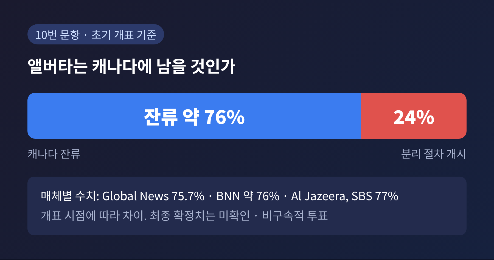
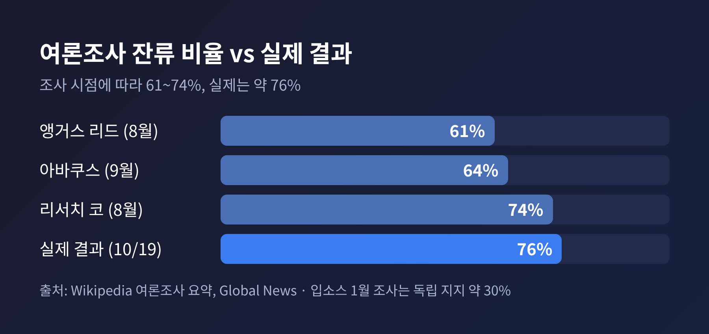
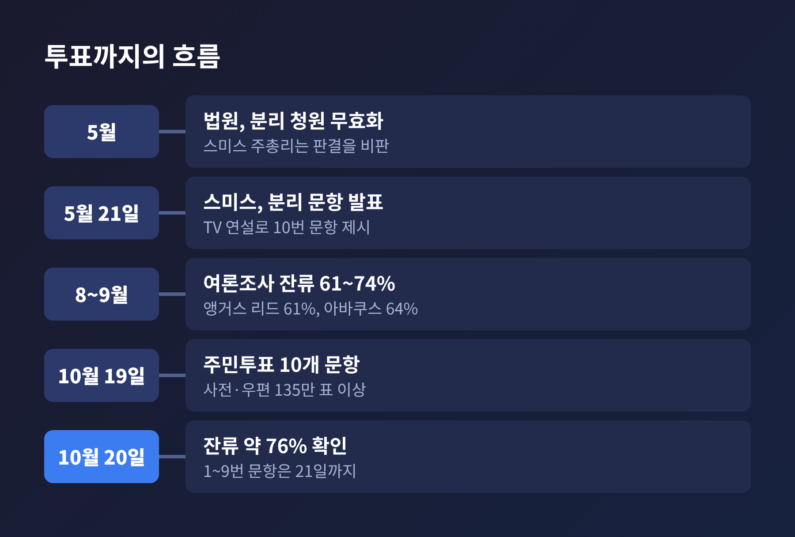
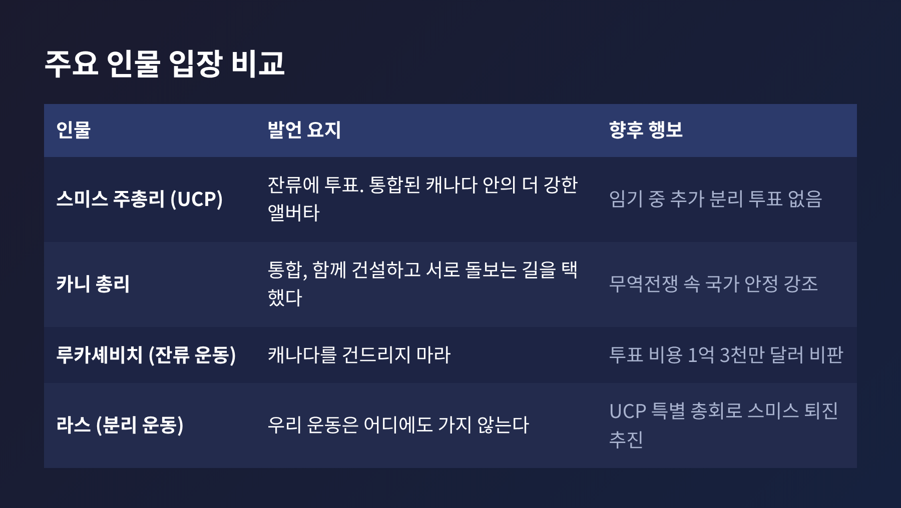

앨버타 주민투표 결과, 76%가 캐나다 잔류 택한 뒤 남은 과제
오늘은 10월 19일 치러진 캐나다 앨버타주 분리독립 주민투표의 결과를 정리해 보려 합니다.
초기 개표 기준으로 유권자 약 76%가 캐나다 잔류를 택했고, 분리 절차를 시작하자는 쪽은 약 24%에 그쳤습니다.
다만 분리주의 진영은 활동을 이어가겠다고 밝혀, 논쟁이 완전히 끝난 것은 아닙니다.
■ 무슨 일이 있었나: 10개 문항 중 10번이 분리 문항
2026년 10월 19일(월), 앨버타주는 주민투표 10개 문항을 한꺼번에 묻는 투표를 치렀습니다.
그중 10번 문항이 분리독립과 관련된 질문입니다.
앨버타가 캐나다의 한 주로 남을 것인지, 아니면 주정부가 장차 탈퇴를 묻는 구속력 있는 주민투표를 위한 법적 절차를 시작할 것인지를 고르는 양자택일이었습니다.
이번 투표가 곧바로 독립을 결정하는 것은 아니었습니다.
비구속적 투표였고, 분리 쪽이 이겼다면 이후 별도의 분리 투표로 가는 길이 열리는 구조였습니다.
결과는 매체마다 소수점 단위로 조금씩 다릅니다.
글로벌뉴스는 후속 보도에서 잔류 75.7%, 분리 절차 개시 24.3%로 전했습니다.
알자지라와 SBS 뉴스는 100만 표 이상을 센 시점에 77% 대 23%로 보도했습니다.
개표 시점이 달랐던 탓으로 보이며, 이 글에서는 '약 76%'로 표기합니다. 최종 확정치는 아직 확인되지 않았습니다.
개표는 예정보다 늦어졌습니다.
오후 8시(산악시간)에 나오기로 했던 결과가 세 시간 넘게 지연됐습니다.
일부 투표소가 늦게 문을 열어 100곳 이상이 투표 시간을 연장했기 때문입니다.

■ 왜 중요한가: 여론조사보다 컸던 격차
이 결과가 주목받는 이유는 격차의 크기에 있습니다.
2026년 초부터 여론조사는 대체로 잔류 약 70% 안팎을 가리켰습니다. 1월 입소스 조사에서 독립 지지는 약 30%였습니다.
8월 앵거스 리드 조사는 잔류 61%, 분리 절차 개시 33%까지 좁혀진 적도 있습니다.
글로벌뉴스는 실제 결과가 "여론조사가 예측한 것보다 더 결정적"이었다고 평가했습니다.
참여 열기도 뜨거웠습니다.
사전투표와 우편 등 특별투표만 135만 표를 넘었습니다. 2023년 주 총선 때 약 81만 표였으니 크게 늘어난 셈입니다.
우편 투표는 519,082표로, 2023년의 열 배 수준이었습니다.
최종 투표율은 아직 발표되지 않았습니다.
역사적 비교도 가능합니다.
캐나다 퀘벡은 1980년 이후 두 차례 주권 투표를 했고, 1995년에는 잔류 쪽이 50.58%로 간신히 이겼습니다.
그에 비하면 이번 격차는 훨씬 큽니다.
정치적으로는 마크 카니 총리에게 반가운 소식입니다.
알자지라는 미국과의 무역전쟁이 이어지는 가운데 국가 통합을 도모해 온 카니 총리에게 "꼭 필요했던 승리"라고 전했습니다.
카니 총리는 소셜미디어에 이렇게 적었습니다. "그들은 통합을, 함께 건설하고 서로를 돌보는 길을 택했다."
투표 사흘 전 에드먼턴 유세에서는 "캐나다의 미래가 달린 것처럼 투표하라"고 호소했습니다.

■ 배경과 쟁점: 석유, 오타와, 그리고 미국 변수
앨버타는 세계 4위 규모의 석유 매장량을 가진 지역입니다.
분리 움직임의 중심에는 석유산업을 어떻게 다루느냐에 대한 불만이 있습니다.
다니엘 스미스 주총리는 이전 트뤼도 정부가 기후 의제를 앞세워 석유 생산을 억누르려 했다고 비판해 왔습니다.
일부 분리주의자들은 석유 수입을 나머지 캐나다와 지나치게 나눈다고 주장합니다.
예전에는 달랐습니다.
제이슨 케니 전 주총리에 따르면 분리주의 정당은 보통 1~2% 득표에 그쳤습니다.
코로나 방역 규제에 대한 분노가 활동가들을 결집시켰고, 그 흐름이 훗날 분리 운동으로 이어졌다는 설명입니다.
지금은 연방과의 관계가 일부 달라졌습니다.
앨버타에서 자란 카니 총리는 지난해 취임한 뒤 주정부와 관계를 개선했습니다.
스미스 주총리와 함께 앨버타산 역청을 해외로 수출할 새 송유관 사업도 추진 중입니다. 트뤼도 정부에서는 어려운 사업으로 여겨졌던 일입니다.
이번 투표가 성사된 과정에는 논란이 있었습니다.
5월에 킹스벤치 법원이 분리 청원을 무효로 하자, 스미스 주총리는 해당 문항을 직접 투표에 넣었습니다.
그는 이번 투표가 분리를 직접 촉발하지 않으므로 판결이 적용되지 않는다고 주장했습니다.
잔류 운동을 이끈 토머스 루카셰비치 전 부총리는 이 투표에 1억 3천만 달러가 들었다며, 의회 표결로도 충분했을 것이라고 비판했습니다.
미국의 시선도 변수였습니다.
스콧 베선트 미 재무장관은 앨버타를 미국의 "자연스러운 파트너"라 불렀고, 일론 머스크는 X에 앨버타가 "분리해야 한다"고 적었습니다.
TRT 월드는 분리주의 지도부가 미 국무부에서 회의를 하고 공화당 측 조언을 받았다고 전했는데, 이를 '미국 극우의 후원'으로 규정한 것은 이 매체의 해석입니다.
반면 SBS 뉴스는 트럼프 대통령의 무역전쟁과 캐나다를 51번째 주로 만들겠다는 발언이 오히려 앨버타에서도 카니 총리 지지를 끌어올렸다고 분석했습니다.

■ 양측의 입장: 승리와 지속 사이
승리한 쪽과 패배한 쪽의 해석은 갈립니다.
스미스 주총리는 본인도 잔류에 투표했다고 밝혔습니다.
그는 "앨버타인들은 통합된 캐나다 안의 더 강한 앨버타를 선택했다"고 말했습니다. 단순 과반이면 결론이 나는 것이며, 이번 임기 중 추가 분리 주민투표는 없을 것이라고도 했습니다.
루카셰비치 전 부총리는 "캐나다를 건드리지 마라!"라고 외쳤습니다.
잔류 운동 쪽은 분리파가 다수가 아님이 확인됐다고 해석합니다.
분리주의 진영은 다르게 말합니다.
앨버타 프로스퍼리티 프로젝트의 공동 설립자 제프리 라스는 운동이 "어디에도 가지 않는다"고 했습니다. 이 싸움에서 "많은 교훈을 얻었다"는 말도 덧붙였습니다.
투표 전 그는 30%만 나와도 기쁘겠다고 말한 바 있어, 24%라는 숫자가 그에게도 쉬운 결과는 아닐 것입니다.
한편 투표 방식 자체에 대한 시각차도 있습니다.
SBS 뉴스는 분리를 원하지 않으면서도 "오타와에 메시지를 보내려고" 분리 절차 개시에 표를 던졌다는 한 유권자를 소개했습니다.
24%가 모두 독립 지지자는 아닐 수 있다는 뜻입니다.

■ 전망: 칼끝은 이제 집권당 내부로
분리 논쟁의 무대는 주민투표장에서 여당 내부로 옮겨가는 모양새입니다.
라스는 통합보수당(UCP) 특별 총회를 추진해 스미스 주총리를 몰아내겠다고 밝혔습니다.
스미스 주총리를 "공공연한 연방주의자"로 규정하고, 그가 당을 이끄는 동안에는 독립이 없다는 논리입니다.
수십만 명의 회원과 자원봉사자가 있다고도 주장했습니다. 이 숫자는 본인 주장이며 검증되지 않았습니다.
당 안팎의 사정도 녹록지 않습니다.
다음 앨버타 주 선거는 2027년 10월로 예정돼 있습니다.
UCP는 지난달 캘거리-쇼 보궐선거에서 패했고, 최근 여론조사에서는 나히드 넨시 대표가 이끄는 NDP와 오차범위 안에서 겨루고 있습니다.
UCP 지역구 협회 두 곳이 11월 정기총회 전 조기 리더십 검토를 지지한 것으로 보도됐습니다.
케니 전 주총리는 투표 뒤 당이 "심판의 때"를 맞을 것이라고 말했습니다.
여기서 눈여겨볼 대목이 있습니다.
투표 직전 아바쿠스 조사에서 UCP 지지자의 52%는 분리 절차 개시에, 44%는 잔류에 표를 던지겠다고 했습니다.
반면 NDP 지지자의 93%는 잔류를 택하겠다고 했습니다.
이번 결과에서 드러난 균열이 당 지지층 안에 남아 있다는 신호입니다.
남은 일정도 있습니다.
이민과 헌법에 관한 1~9번 문항 결과는 수요일(10월 21일)까지 나올 예정입니다.
스미스 주총리는 이 문항들이 오타와와의 협상에서 지렛대 역할을 한다고 설명해 왔습니다.
카니 총리는 투표 전 이 아홉 개 문항에는 반대하라고 촉구했기 때문에, 연방과 주정부의 신경전이 이어질 수 있습니다.
정리하면 이렇습니다.
잔류 약 76%라는 숫자는 분명한 답이지만, 불만의 뿌리까지 사라졌다고 보기는 어렵습니다.
석유 수입의 배분, 연방 정책, 그리고 집권당의 향방이 앞으로 앨버타의 숨은 쟁점으로 남을 것입니다.
"독립 논쟁은 끝났을까, 장소를 옮겼을 뿐일까."
이 질문의 답은 몇 달 안에 UCP 안에서 먼저 드러날 것으로 생각합니다.
(참고: Global News, Al Jazeera, BNN Bloomberg, SBS News, TRT World 등 2026년 10월 20일자 보도)